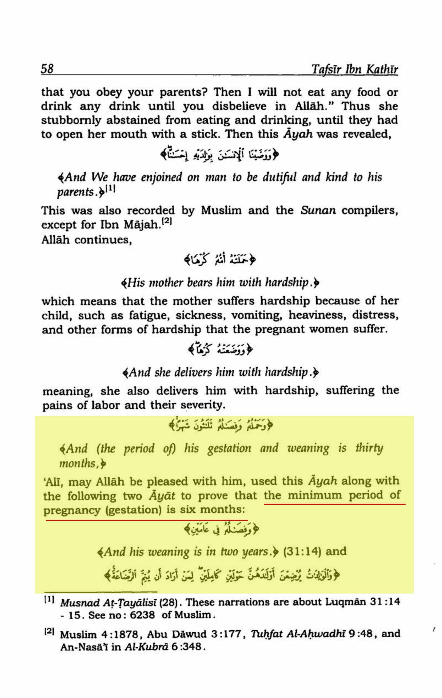

The claim that the Quran makes a scientific error regarding the duration of pregnancy in Surah 34 verse 15 and Surah 46 verse 15 is utterly false. The verses mention the gestation and weaning period of a child, and some people have interpreted them to mean that the duration of pregnancy is only six months. However, this interpretation is not supported by the majority of Islamic scholars, including Imam Ibn Kathir and Imam As-Suyuti.
As proof, Tafsir Ibn Kathir Surat 46 verse 15 mentions that `Ali (may Allah be pleased with him) used this Ayah along with two other verses to prove that the minimum period of pregnancy (gestation) is six months. This is supported by other verses in the Quran that mention the weaning period of two years (2:233) and the fact that the gestation period varies depending on the species (22:5). And we also know by the Tafsir that a woman from Juhaynah delivered a baby after six months of pregnancy.
Furthermore, in Ad-Durr al-Manthur fi Tafsir bil-Ma-thur by Imam as-Suyuti, it is mentioned that:
Muhammad bin Ishaq bin Yasar narrated from Bajah bin Abdullah Al-Juhani that a man from his tribe (Juhaynah) married a woman from Juhaynah. She delivered a baby after six months. So her husband went to Uthman (may Allah be pleased with him) and told him about that. Thus, Uthman summoned her. When she was getting dressed, her sister started crying. She asked her: "Why do you cry By Allah, no one has ever approached me (for sexual relations) of Allah's creation except him (my husband). So let Allah decree (for me) as He wills.'' When she was brought before Uthman, he commanded that she be stoned to death (for adultery). Ali heard of this, came to Uthman, and said: "What are you doing'' He (Uthman) said: "She delivered after six months! Can this ever happen'' Ali (may Allah be pleased with him) said: "Don't you read the Qur'an''...
Therefore, the claim of a scientific error in the Quran regarding the duration of pregnancy is false, as there are alternative interpretations that are supported by Islamic scholarship.

Pregnancy lasts for about 280 days or 40 weeks. A preterm or premature baby is delivered before 37 weeks of your pregnancy. Extremely preterm infants are born 23 through 28 weeks.
(6 month).
https://www.health.ny.gov/community/pregnancy/why_is_40_weeks_so_important.htm
https://www.acog.org/womens-health/faqs/preterm-labor-and-birth
https://www.marchofdimes.org/find-support/topics/birth/premature-babies
https://www.cdc.gov/reproductivehealth/maternalinfanthealth/pretermbirth.htm